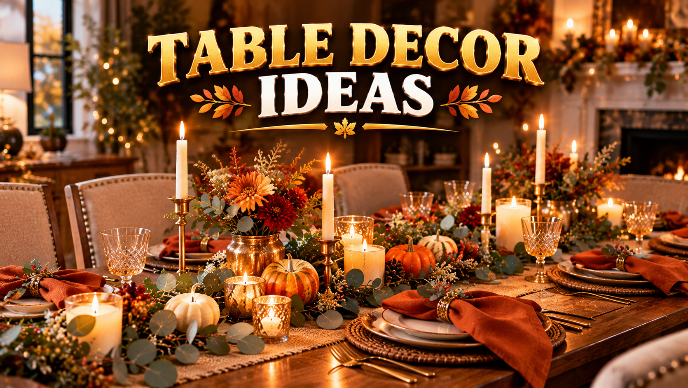

Thanksgiving Table Decor 2026: Centerpiece & Setting Ideas
Published October 12, 2026 · Updated October 12, 2026 · By EventBuzz Team

The Thanksgiving table is where the day's best memories happen — long conversations, seconds of pie, and the annual photo everyone posts. Decorating it well does not require expensive rentals or a designer's eye; it requires a plan made before the turkey goes in the oven. This guide walks through Thanksgiving table decor for 2026: choosing a palette, building a centerpiece guests can see over, setting places that feel personal, and lighting the whole thing so even a simple meal looks like a feast. Pair it with our Thanksgiving Dinner Ideas for the menu side of the plan.
Start With a Palette, Not a Shopping List
Every beautiful Thanksgiving table you have admired started with a colour decision. Pick two colours plus one metal and repeat them everywhere — runner, napkins, centerpiece, candles:
- Classic harvest: burnt orange and deep red with gold. Warm, traditional, photographs beautifully.
- Modern neutral: cream and sage with brass. Calm and elegant; lets the food be the colour.
- Moody autumn: plum and forest green with antique gold. Dramatic for evening dinners.
- Rustic natural: brown and cream with wood tones. Burlap, pinecones, and eucalyptus do the work.
The palette also answers the "what should I buy" question: anything in your colours, nothing outside them. A table where everything coordinates looks designed even when every piece came from a different store — or your own cabinets.
Centerpiece Ideas Guests Can See Over
The golden rule of Thanksgiving centerpieces: nothing taller than about 12 inches in the middle of the table. Guests need to see each other's faces — that is the entire point of sitting together. Build along the table, not upward:
- The greenery runner: a loose line of eucalyptus, olive branches, or faux autumn garland down the centre, dotted with small pumpkins, pinecones, and candles at varied heights. Simple, forgiving, and easy to shift when the serving dishes arrive.
- Pumpkin cluster: group pumpkins and gourds of different sizes and colours in the middle — real ones last weeks and can be roasted later. Tuck in fairy lights or tea lights between them for evening glow.
- Harvest bowls: a wide low bowl of apples, pears, artichokes, and nuts reads abundant and edible. One strong centerpiece bowl beats five small scattered items.
- Candle line: pillar candles of different heights in your palette colour, interspersed with small gourds. Keep flames clear of anything flammable and never leave them unattended.
- Tiered serving stand: a 3-tier platter stand holding fruit, rolls, or desserts doubles as decor and serving space — it earns its place on the table instead of just occupying it.
Set the centerpiece first, then place the serving dishes around it — or plan to move the centerpiece to a sideboard when the food lands. A centerpiece that cannot survive the turkey's arrival was never practical.
Place Settings That Feel Personal
Place settings are where guests feel individually welcomed. You do not need charger plates and five forks; you need one thoughtful touch per seat:
- The napkin moment: fold cloth napkins (or nice paper ones) and top each with a sprig of rosemary, a mini pumpkin, a cinnamon stick tied with twine, or a handwritten name card. This single detail photographs better than almost anything else on the table.
- Layer simply: placemat or charger, dinner plate, folded napkin on top. If you own only plain white plates, that is ideal — white lets the food and decor carry the colour.
- Name cards: handwrite names on kraft paper tags, small pumpkins, or folded cards. They settle seating debates before they start and make every guest feel expected.
- A small favour: a wrapped chocolate, a tiny jar of jam, or a "grateful for you" note at each plate. Cheap, memorable, and the thing people mention afterwards.
Linens, Candles, and Light
Linens: a tablecloth or runner anchors the palette. Layering a runner over a plain cloth in a contrasting colour looks instantly styled. Cloth napkins elevate everything — rent or buy one set in your palette and reuse it for years. Iron them the night before; wrinkled linens undo all other effort.
Candles: candlelight is the cheapest luxury in decorating. Mix pillar candles, tea lights in glass holders, and a few taper candles for height at the ends (never in the middle where they block views). Use unscented candles near food — scented ones fight the aroma of the meal — and put the scented ones in the entryway instead.
Room light: dim the overheads and let the candles and a low lamp do the work. If your dining room has harsh lighting, turn it off entirely and rely on candles plus one warm side light. Food, faces, and decor all look better in warm low light.
Small Tables, Kids' Tables, and Tight Budgets
Small tables: skip the wide greenery runner and use one compact centerpiece — a single pumpkin with candles, or a small bowl of fruit. Push the palette into the napkins and name cards instead of the centre, where space is scarce.
Kids' table: give children their own decorated corner: kraft paper as a tablecloth they can draw on, crayons in a jar, and a small pumpkin per child to take home. They stay happily occupied and the adult table stays civilized.
Budget moves: foraged branches and pinecones are free; grocery-store pumpkins and gourds cost little; a bag of tea lights transforms any table; and borrowing serving pieces beats buying them. The most expensive-looking tables are usually just the most coordinated ones.
Thanksgiving Table Serving Picks
Tiered stands, serving trays and candle holders that pull a holiday table together.


Prices shown at the time of publishing and can change. Links take you to AliExpress or Temu, where shipping and delivery details are shown.
Frequently Asked Questions
What should a Thanksgiving centerpiece look like?
Low and long rather than tall: a greenery runner with pumpkins and candles, a pumpkin cluster, or a wide bowl of harvest fruit — all under about 12 inches so guests can see each other across the table.
What colours work best for Thanksgiving table decor?
Autumn palettes lead: burnt orange and deep red with gold, cream and sage with brass, or plum and forest green with antique gold. Pick two colours plus one metal and repeat them across the table.
How do I decorate a Thanksgiving table on a budget?
Use foraged branches and pinecones, grocery-store pumpkins, tea lights, and a runner over a cloth you already own. Coordination matters more than cost — a consistent palette looks designed at any price.
Should Thanksgiving candles be scented?
Use unscented candles on the dining table so they do not compete with the food's aroma. Save scented candles for the entryway or living room.
When should I set the Thanksgiving table?
The night before. Thanksgiving 2026 is Thursday, November 26, and the day itself is busy enough with cooking — a set table removes one whole job from the morning.
How do I decorate for a small Thanksgiving table?
Use one compact centerpiece instead of a long runner, and push the palette into napkins, name cards, and candles. Keep serving dishes on a sideboard to free the table surface.
Conclusion
A beautiful Thanksgiving table is a planned one: one palette, a low centerpiece, a personal touch at every seat, and candlelight doing the heavy lifting. Set it the night before, dim the overheads, and let the meal — and the people around it — be the main event. The decor just makes sure the photos match the memory.
More holiday help from EventBuzz:
Happy Thanksgiving — may your table be full and your candles never drip on the good cloth!